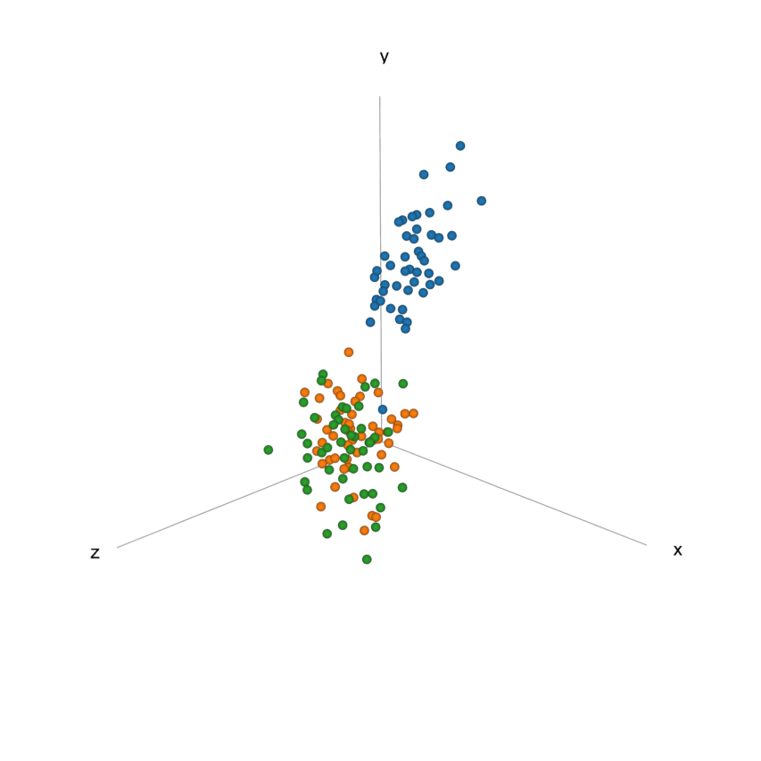

about us
Aim of d3_3dpoint()
d3_3dpoint() creates a three dimentional scatter plot that allows the user to twist it any way they would like. Creating a malluable scatter plot allows a user to quickly disern any variances with the data. d3_3dpoint() builds upon d3_point() adding even more arguments and pulling in more functionality from d3.js.